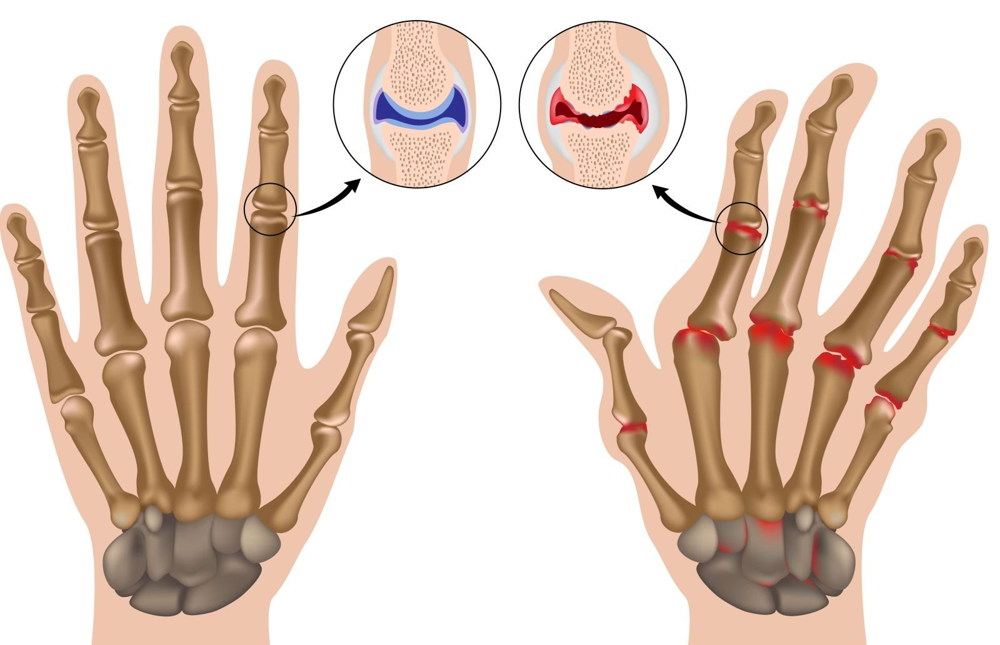

Fotó: EAST NEWS
Fotó: EAST NEWS
Az elmúlt 20 évben csaknem kétszeresére nőtt az ízületi betegségben szenvedők száma, a betegek átlag életkora pedig 24 évre csökkent. Ezt írhatjuk a mozgásszegény életmód, a dohányzás, a megnövekedett stressz és a helytelen táplálkozás számlájára. Az ízületi gyulladás súlyos betegség, amely néhány év leforgása alatt mozgásképtelenné tehet egy embert. Hogyan úszhatjuk meg a kerekesszéket és gyógyítsuk az ízületi megbetegedéseket egyszer és mindenkorra?

Az ízületi gyulladás tünetei
Az ízületi gyulladás számos tünettel jár
együtt:
- Ropogó ízületek
- Nehézkes mozgás
- Csontfájdalom
- Hátfájdalom
- Időjárás-változással járó fájdalom
- Merevségérzet
- Legyengült szervezet
- Ízület megnagyobbodása, duzzadása

Mit jelent az ízületi gyulladás?
Az ízületi gyulladás kialakulási mechanizmusa viszonylag egyszerű és régóta ismert. A betegség gyakran akkor fordul elő, amikor kórokozók jutnak a szervezetbe. Ilyenkor beindul az immunrendszer természetes reakció, amely elnyomja a betegséget. A védekező rendszer hibás működése miatt mind az idegen sejtek, mind a porcszövet károsodik.
Számíthatunk-e az innovatív fejlesztésekre?
2019 márciusában az Oszakai Egyetem tudósai nyilatkozatot tettek közzé az ízületi gyulladás új kezelési módszeréről, nevezetesen az immunterápiáról. Az immunterápia csak a fertőzés elleni küzdelemben segíti a szervezetet, sértetlenül hagyva az ízületeket. Sajnos nem mindenki számára alkalmas. Azonkívül drága és nem mindig vezet eredményre. Az immunterápiának van még egy hátránya: ha az ön esetében nem alkalmazható, akkor akár teljesen tönkre is teheti az ízületeket. Sokan az immunterápia matt váltak mozgásképtelenné. A szervezetük egyszerűen nem volt képes befogadni.

Az immunterápia alternatívája
A fájdalmat nem szabad figyelmen kívül hagyni: az ízületi gyulladás nem múlik el magától. Idővel a betegség egyre súlyosabbá formát ölt, ilyenkor már sokkal nehezebb kezelni, mint a kezdeti stádiumban. Ráadásul a fájdalom elviselhetetlenné válik, az élet minden területét megkeseríti, akár munka vagy alvás közben.
A fájdalmat nem szabad figyelmen kívül hagyni: az ízületi gyulladás nem múlik el magától. Idővel a betegség egyre súlyosabbá formát ölt, ilyenkor már sokkal nehezebb kezelni, mint a kezdeti stádiumban. Ráadásul a fájdalom elviselhetetlenné válik, az élet minden területét megkeseríti, akár munka vagy alvás közben.
Az Egészségügyi Világszervezet az „Egészséges élet” nevű projekt keretében japán orvosokkal együtt kifejlesztett egy innovatív készítményt az ízületi gyulladás ellen. Ez az eszköz megakadályozza a test ízületekre történő agresszív reakcióját, csökkenti a fájdalmat és nem károsítja az egészséget.
Néhány hónappal ezelőtt az új készítmény bekerült a gyógyszertárakba, de a többi gyártó elkezdte kiszorítani a piacról, mivel alacsony ára és hatékonysága révén csökkent az ízületi betegségek kezelésére használt egyéb gyógyszerek iránti kereslet.
A készítmény kibocsátását megvalósító projektet újraindították, kiegészített összetevőkkel, és interneten került forgalomba, hogy a betegeknek többé ne kelljen sorba állniuk a gyógyszertárakban.

Az ízületi gyulladás kezelése következmények nélkül
Jelenleg az az egyetlen olyan készítmény, amely képes megállítani az ízületekben zajló gyulladásos folyamatokat és mellékhatások nélkül csökkenteni a fájdalmat.
Az gyógyítja az ízületeket, enyhíti a duzzanatot és a fájdalmat. A készítmény egyik kulcsfontosságú összetevője a cápamáj olaj, amely a benne lévőalkoxigliceridrévén fejti ki gyógyító hatását a szervezetre. Ezen hatóanyag biztosítja a szervezet energia stimulációját, valamint elősegíti a csontszövet gyógyulását. Az eukaliptusz olaj, ginseng és propolisz kivonattal összhangot alkotva a cápamáj olaj lehetővé teszi az ízületi gyulladás tüneteinek enyhítését és a beteg közérzetének javítását.
A legnagyobb hatás elérése érdekében az -et naponta többször kell alkalmazni, emellett nem túl megerőltető fizikai tevékenységek végzése is javasolt. Egy kiadós séta a friss levegőn, úszás, aerobik vagy tánc – bármiféle mozgás, ami jól esik. A tudósok állítása szerint ez a kapszulák vezető szerepet tölthet be az ízületi gyulladás kezelésében.
<Jelenleg az a legjobb készítmények közé sorolható ízületi gyulladás kezelésére. Az -et kizárólag Japánban gyártják, de az orvosok világszerte forgalomba akarják hozni. Amíg ez nem történik meg, a szakemberek kétszer olyan olcsón értékesítik, mint amennyiért eredetileg tervezték. Ha a termék már az egész világon kapható lesz, az árát is fel fogják emelni. Az orvosok nem tudják biztosítani a kiszállítást az egész világon, ha az továbbra is ilyen olcsó áron marad forgalomban. Már nagyon kevés idő áll rendelkezésre az rekord alacsony áron történő megvételére.
Megjegyzések:
Nemrég megrendeltem az -et és alig néhány nap alatt szépen meg is érkezett a csomag! Ilyen gyorsasággal még egy sürgősségi levelet sem küldenek el, köszönöm!
Komolyan mondjátok? Bekenem kapszulákmel és egyből minden bajom elmúlik?
Júlia, az még a legreménytelenebb esetekben is használ. Bele kell dörzsölni, hogy jól áthatoljon, akkor nagyon szépen gyógyít és csökkenti a fájdalmat. Sokkal jobb, mintha egy csomó tablettát szednél vagy injekcióznád magad. Próbáld ki az használni fog, szakemberként mondom neked!
Nekem bejött az . Szerintem rendelek még!
Anyukámnak vettem. Az használata előtt alig bírt felállni: beduzzadtak az ízületei és körülötte forró volt a bőre. Nagyon sokat szenvedett! Alighogy elkezdte használni az -et, teljesen megfiatalodott. Nem fáj a lába, a karja is rendben van, végre ki tud menni a kertbe és többet játszhat az unokákkal! Pedig már 80 éves elmúlt!
Jó a cikk!
Csak az -el voltam képes lábra állni! Ha valaki azt mondja, hogy ez a kapszulák semmit nem ér, az sokat veszít!
Engem érdekel, szeretném kipróbálni
Horváth Nóra
Nem hisztek nekem, de én azóta már szültem!:) Aggódtam, hogy a fájó ízületek miatt rosszul vészelem át a terhességet ezért nem mertem belevágni, de telt-múlt az idő:( Sok mindent kipróbáltam: a hormonális gyógyszerek, meg ezek a szerencsétlen injekciók, annyi tablettát szedtem, semmi nem használt! Barátnőm javasolta az -et és amint kipróbáltam, egyből sokkal jobban lettem, a következő hónapban pedig már vártuk a gyerkőcöt:) Kipihenem magam, aztán terveink szerint jön a következő baba!
Igen, nagy öröm a gyerek, de egy unoka kétszeres öröm! Most már több időt tölthetek az unokáimmal, én meg csak örülök neki, az -el fiatalabbnak érzem magam, mintha az anyjuk lennék, nem is a nagymamájuk!!
Szerintem rendelek anyukámnak, remélem használni fog
Végre fájdalom nélkül élhetek! Köszönöm! Azt tervezem, hogy télen síelni fogok a lányaimmal, korábban gondolni sem mertem fizikai megerőltetésre, de az -el szerencsém volt